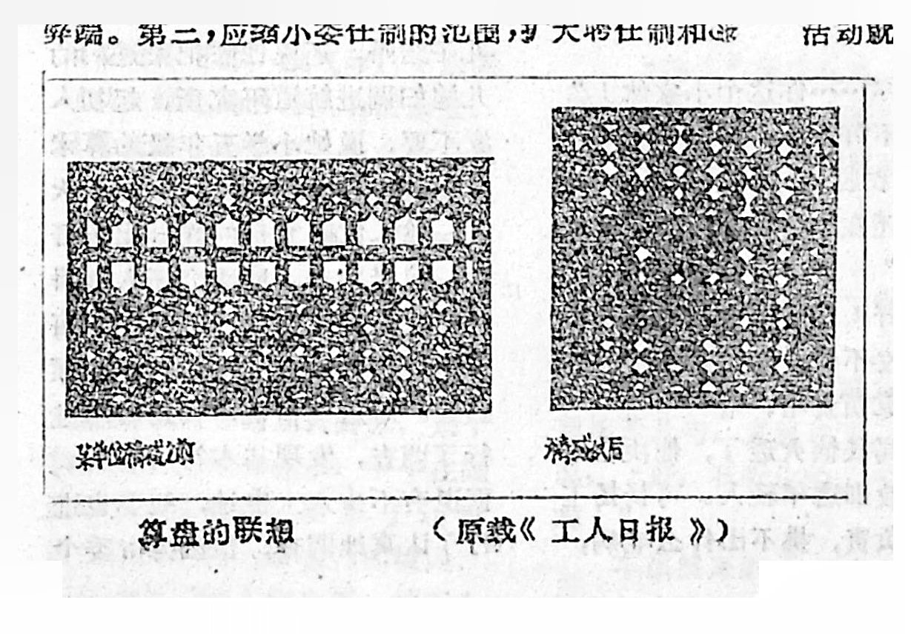

佚名 《人事》1986年第2期（总第5期），第43页（原载《工人日报》）
算盘的联想
Thoughts on an Abacus
- Text in the drawing
- 某单位精简前 / 精简后
Some unit before streamlining / after streamlining - Description
- Two abacuses: the unit's staff before 'streamlining' and after — the second is even more crowded with beads.
- Note
- 精简 ('streamlining') was the official term for cutting staff in the 1980s administrative reforms.
- Artist
- Unattributed 佚名
- Reprinted from
- 《工人日报》 — Gongren ribao (Workers' Daily)
- Published in
- 《人事》1986年第2期（总第5期）, p. 43
- Themes
- Overstaffing and overlapping agencies · Reform and its implementation

Cite
Unattributed, “算盘的联想” [Thoughts on an Abacus], Renshi (Personnel) 《人事》, 1986, no. 2, p. 43.